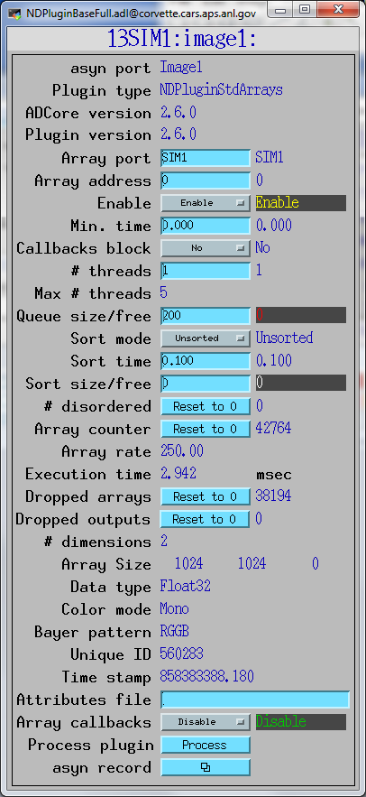
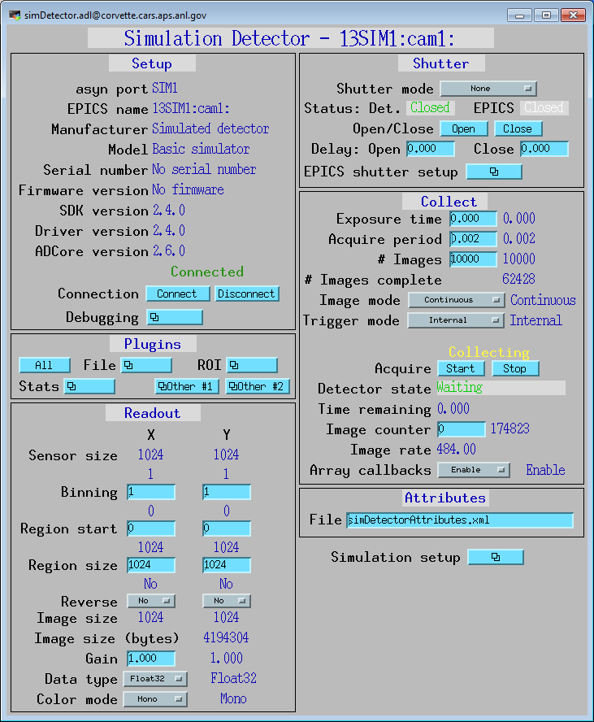
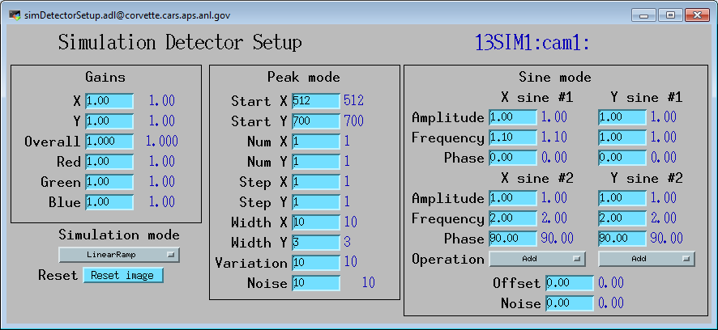

A powerful feature of the EPICS areaDetector module is the concept of plugins. A plugin is code that is called by a driver that passes NDArray data in a callback. Plugins can be used to process array data in real time. Existing plugins do operations such as compute statistics (NDPluginStats), convert data to standard asyn arrays (NDPluginStdArrays), save data to disk (NDPluginFile), select regions-of-interest (NDPluginROI), as well as many more. New plugins can be written to perform specialized functions. Once a plugin is written it will work with any areaDetector driver. Plugins have the the following properties:
NDPluginDriver inherits from asynNDArrayDriver. NDPluginDriver is the class from which actual plugins are directly derived. The EPICS database NDArrayBase.template provides access to each of the parameters defined in asynNDArrayDriver, and the asynNDArrayDriver documentation describes that database. The NDPluginDriver class handles most of the details of processing NDArray callbacks from the driver. Plugins derived from this class typically need to implement the processCallbacks method, and one or more of the write(Int32, Float64, Octet) methods. The NDPluginDriver class documentation describes this class in detail.
NDPluginDriver defines parameters that all plugin drivers should implement if possible.
These parameters are defined by strings (drvInfo strings in asyn) with an associated
asyn interface, and access (read-only or read-write). The EPICS database NDPluginBase.template
provides access to these standard plugin parameters, listed in the following table.
Note that to reduce the width of this table the parameter index variable names have
been split into 2 lines, but these are just a single name, for example NDPluginDriverArrayPort.
| Parameter Definitions in NDPluginDriver.h and EPICS Record Definitions in NDPluginBase.template | ||||||
| Parameter index variable | asyn interface | Access | Description | drvInfo string | EPICS record name | EPICS record type |
|---|---|---|---|---|---|---|
| Information about this plugin | ||||||
|
NDPluginDriver PluginType |
asynOctet | r/o | A string describing the plugin type. | PLUGIN_TYPE | $(P)$(R)PluginType_RBV | stringin |
| asyn NDArray driver doing callbacks to this plugin | ||||||
|
NDPluginDriver ArrayPort |
asynOctet | r/w | asyn port name for NDArray driver that will make callbacks to this plugin. This port can be changed at run time, connecting the plugin to a different NDArray driver. | NDARRAY_PORT |
$(P)$(R)NDArrayPort (P)$(R)NDArrayPort_RBV |
stringout stringin |
|
NDPluginDriver ArrayAddr |
asynInt32 | r/w | asyn port address for NDArray driver that will make callbacks to this plugin. This address can be changed at run time, connecting the plugin to a different address in the NDArray driver. | NDARRAY_ADDR |
$(P)$(R)NDArrayAddress $(P)$(R)NDArrayAddress_RBV |
longout longin |
| Queue size and status | ||||||
|
NDPluginDriver QueueSize |
asynInt32 | r/w | The total queue size for callbacks when BlockingCallbacks=0. This can be changed at run time to increase or decrease the size of the queue and thus the buffering in this plugin. This changes the memory requirements of the plugin. When the queue size is changed the plugin temporarily stops the callbacks from the input driver and waits for all NDArrays currently in the queue to process. | QUEUE_SIZE |
$(P)$(R)QueueSize $(P)$(R)QueueSize_RBV |
longout longin |
|
NDPluginDriver QueueFree |
asynInt32 | r/o | The number of free queue elements. This record goes into minor alarm when the queue is 75% full and major alarm when the queue is 100% full. | QUEUE_FREE | $(P)$(R)QueueFree | longin |
|
NDPluginDriver QueueUse |
N/A | r/o | The number of used queue elements. | N/A | $(P)$(R)QueueUse | calc |
| Number of threads | ||||||
|
NDPluginDriver MaxThreads |
asynInt32 | r/o | The maximum number of threads that this plugin is allowed to use. This is defined when the plugin is created, and cannot be changed at run-time. Note that some plugins are not thread-safe for multiple threads running in the same plugin object, and these must force MaxThreads=1. | MAX_THREADS | $(P)$(R)MaxThreads_RBV | longin |
|
NDPluginDriver NumThreads |
asynInt32 | r/w | The number of threads to use for this plugin. The value must be between 1 and MaxThreads. | NUM_THREADS |
$(P)$(R)NumThreads $(P)$(R)NumThreads_RBV |
longout longin |
| Sorting of output NDArrays | ||||||
When using a plugin with multiple threads, or when the input plugin is NDPluginGather
it is likely that the NDArray output will be slightly out of order, i.e. NDArray::uniqueId
fields will not be monotonically increasing. This is because the threads are running
asynchronously and at slightly different speeds. As a consequence a file plugin
downstream of this plugin would write NDArrays to the file in the "wrong" order.
Plugins have an option to sort the NDArrays by uniqueId to attempt to output them
in the correct order. This sorting option is enabled by setting SortMode=Sorted,
and works using the following algorithm:
If the plugin is receiving 500 NDArrays/s (2 ms period), and the maximum time the plugin threads require to execute is 20 msec, then the minimum value of SortTime should be 0.02 sec, and the minimum value of SortSize would be 10. It is a good idea to add a safety margin to these values, so perhaps SortSize=50 and SortTime=0.04 sec. |
||||||
|
NDPluginDriver SortMode |
asynInt32 | r/w | Selects whether the plugin outputs NDArrays in the order in which they arrive (Unsorted=1) or sorted by UniqueId (Sorted=1). | SORT_MODE |
$(P)$(R)SortMode $(P)$(R)SortMode_RBV |
mbbo mbbi |
|
NDPluginDriver SortTime |
asynFloat64 | r/w | Sets the minimum time that the plugin will wait for preceeding arrays to arrive before outputting array N when SortMode=Sorted. | SORT_TIME |
$(P)$(R)SortTime $(P)$(R)SortTime_RBV |
ao ai |
|
NDPluginDriver SortSize |
asynInt32 | r/w | The maximum allowed size of the std::multiset. This can be changed at run time to increase or decrease the size of the queue and thus the buffering in this plugin. This changes the memory requirements of the plugin. | SORT_SIZE |
$(P)$(R)SortSize $(P)$(R)SortSize_RBV |
longout longin |
|
NDPluginDriver SortFree |
asynInt32 | r/o | The number of NDArrays remaining before the std::multiset will not be allowed to grow larger and the plugin may begin to drop output frames. | SORT_FREE | $(P)$(R)SortFree | longin |
|
NDPluginDriver DisorderedArrays |
asynInt32 | r/w | The number of NDArrays that have been output in the "wrong" order. The definition of the wrong order for NDArray[N] is that NDArray[N].uniqueId=NDArray[N-1].uniqueId or NDArray[N].uniqueId=NDArray[N-1].uniqueId+1. The reason for the equality test is explained above. | DISORDERED_ARRAYS |
$(P)$(R)DisorderedArrays $(P)$(R)DisorderedArrays_RBV |
longout longin |
|
NDPluginDriver DroppedOutputArrays |
asynInt32 | r/w | Counter that increments by 1 each time an NDArray callback occurs when SortMode=1 and the std::multiset is full (SortFree=0), so the NDArray cannot be added to the std::multiset. | DROPPED_OUTPUT_ARRAYS |
$(P)$(R)DroppedOutputArrays $(P)$(R)DroppedOutputArrays_RBV |
longout longin |
| Callback enable, minimum time, and statistics | ||||||
|
NDPluginDriver EnableCallbacks |
asynInt32 | r/w | Enable (1) or disable (0) callbacks from the driver to this plugin. If callbacks are disabled then the plugin will normally be idle and consume no CPU resources. When disabling the plugin it will continue to process any NDArrays that are already in the queue. | ENABLE_CALLBACKS |
$(P)$(R)EnableCallbacks $(P)$(R)EnableCallbacks_RBV |
bo bi |
|
NDPluginDriver BlockingCallbacks |
asynInt32 | r/w |
0 = callbacks from the driver do not block; the NDArray data is put on a queue and
the callback processes in one of the plugin threads.
1 = callbacks from the driver block; the callback processes in the driver callback thread. |
BLOCKING_CALLBACKS |
$(P)$(R)BlockingCallbacks $(P)$(R)BlockingCallbacks_RBV |
bo bi |
|
NDPluginDriver ProcessPlugin |
asynInt32 | r/w | NDPluginDriver maintains a pointer to the last NDArray that the plugin received. If the ProcessPlugin record is processed then the plugin runs again using this same NDArray. This can be used to change the plugin parameters and observe the effects on downstream plugins and image viewers without requiring the underlying detector to collect another NDArray. When the plugin is disabled the cached NDArray is released back to the NDArrayPool. | PROCESS_PLUGIN | $(P)$(R)ProcessPlugin | bo |
|
NDPluginDriver ExecutionTime |
asynFloat64 | r/o | The execution time when the plugin processes. This is useful for measuring the performance of the plugin | EXECUTION_TIME | $(P)$(R)ExecutionTime_RBV | ai |
|
NDPluginDriver MinCallbackTime |
asynFloat64 | r/w | The minimum time in seconds between calls to processCallbacks. Any callbacks occuring before this minimum time has elapsed will be ignored. 0 means no minimum time, i.e. process all callbacks. | MIN_CALLBACK_TIME |
$(P)$(R)MinCallbackTime $(P)$(R)MinCallbackTime_RBV |
ao ai |
|
NDPluginDriver DroppedArrays |
asynInt32 | r/w | Counter that increments by 1 each time an NDArray callback occurs when NDPluginDriverBlockingCallbacks=0 and the plugin driver queue is full, so the callback cannot be processed. | DROPPED_ARRAYS |
$(P)$(R)DroppedArrays $(P)$(R)DroppedArrays_RBV |
longout longin |
| Debugging control | ||||||
| N/A | N/A | N/A | N/A | $(P)$(R)AsynIO | asyn |
The following are guidelines and rules for writing plugins
There are 2 medm screens for the NDPluginDriver. The first is NDPluginBase.adl. This exposes a subset of the EPICS PVs for the NDPluginDriver base class. It is normally included in the medm screen for every plugin. For example, the following is the medm screen for the NDPluginStdArrays plugin. Because this plugin does not have any additional records beyond those in the NDPluginDriver base class, this medm screen consists only the NDPluginBase.adl file.
NDPluginBase.adl displays only the PVs that are most commonly used, and does not expose the PVs that are intended more for expert configuration. NDPluginBaseFull.adl displays all of the PVs in NDPluginDriver base class, include those controlling the queue size, number of threads, output array sorting, etc. This display can be opened from the More related display menu in NDPluginBase.adl.

The ADCore/iocBoot directory contains a file called EXAMPLE_commonPlugins.cmd. This file should be copied to commonPlugins.cmd and edited for site-specific requirements. commonPlugins.cmd is loaded by all of the example driver IOC startup scripts. It loads a set of plugins which are typically useful for detectors IOCs. Each detector medm screen has links to related displays for each of the common plugins. While this set of plugins is often useful and sufficient, users are free to add or remove plugins from this set for their own IOCs. New medm displays will typically need to be created if that is done, to have the required links to related displays.
The following medm screen shows the status of all of the common plugins at a glance, with links to bring up the detailed screen for each.
The following example shows how increasing the number of threads from 1 to 5 in the NDPluginStats statistics plugins allows it to keep up with the simDetector running at about 485 frames/s. It also demonstrates the effect of changing SortMode=Sorted and SortMode=Unsorted.
The images were generated by simDetector generating 1024x1024 Float32 images at about 485 frames/s as shown in the following 2 medm screens.


The NDPluginStats plugin was configured to perform all of the statistics calculations (centroid, histogram, etc.) to maximize the time required to process each array, as shown in the following medm screen.

The statistics plugin was first run with just one thread, as shown in the NDPluginBaseFull.adl screen. This screen can be opened with the More related display from the NDPluginBase.adl screen, which is embedded on the left hand side of all plugin medm screens. Note the following on this screen:

The following show the Linux "top" program when the plugin is running with 1 thread as above. Note that the STATS5_Plugin_1 thread is using almost 100% of a core. The simDetector is using about 58% of a core.

The NumThreads PV in the statistics plugin was then changed from 1 to 3, as shown in the following NDPluginBaseFull.adl screen. Note the following:

The following show the Linux "top" program when the plugin is running with 3 threads as above. Note that there are now 3 STATS5_Plugin_N threads, each using almost 100% of a core.

The NumThreads PV in the statistics plugin was then changed from 3 to 5, as shown in the following NDPluginBaseFull.adl screen. Note the following:

The following show the Linux "top" program when the plugin is running with 5 threads as above. Note that there are now 5 STATS5_Plugin_N threads, each using about 87% of a core.

To test sorting of output NDArrays the simDetector was configured to generate 100 arrays in Multiple mode, and the NDFileNetCDF plugin was configured to save 100 arrays in Stream mode. The netCDF plugin received its NDArrays from the STATS5 plugin running with 5 threads as shown above. The test was done 2 times, once with SortMode=Sorted, and then with SortMode=Unsorted. The files are were then read into IDL, using the read_nd_netcdf.pro file that can be found in ADCore/Viewers/IDL.
The following shows the output when reading the file that was written when SortMode=Sorted. attr[0].pvalue is the value of the UniqueId attribute for all 100 NDArrays. Note that the arrays are all in the correct UniqueId order.
IDL> t = read_nd_netcdf('thread_test_5_sorted_001.nc', attr=attr)
IDL> u=*attr[0].pvalue
IDL> print, u
479298 479299 479300 479301 479302 479303 479304 479305 479306 479307
479308 479309 479310 479311 479312 479313 479314 479315 479316 479317
479318 479319 479320 479321 479322 479323 479324 479325 479326 479327
479328 479329 479330 479331 479332 479333 479334 479335 479336 479337
479338 479339 479340 479341 479342 479343 479344 479345 479346 479347
479348 479349 479350 479351 479352 479353 479354 479355 479356 479357
479358 479359 479360 479361 479362 479363 479364 479365 479366 479367
479368 479369 479370 479371 479372 479373 479374 479375 479376 479377
479378 479379 479380 479381 479382 479383 479384 479385 479386 479387
479388 479389 479390 479391 479392 479393 479394 479395 479396 479397
The following shows the output when reading the file that was written when SortMode=Unsorted. Note that the arrays are not in the correct UniqueId order.
IDL> t = read_nd_netcdf('thread_test_5_unsorted_001.nc', attr=attr)
IDL> u=*attr[0].pvalue
IDL> print, u
479398 479399 479400 479401 479402 479403 479404 479405 479406 479407
479408 479409 479410 479411 479412 479414 479413 479415 479416 479417
479418 479419 479420 479421 479423 479422 479424 479425 479426 479427
479429 479428 479430 479432 479431 479435 479433 479434 479436 479437
479438 479440 479439 479441 479443 479442 479446 479445 479444 479447
479448 479449 479450 479452 479451 479453 479454 479456 479455 479457
479459 479458 479460 479461 479463 479462 479464 479465 479466 479467
479469 479468 479470 479471 479472 479473 479475 479474 479476 479477
479478 479479 479480 479481 479482 479483 479484 479485 479486 479487
479488 479489 479490 479491 479492 479493 479494 479495 479496 479497